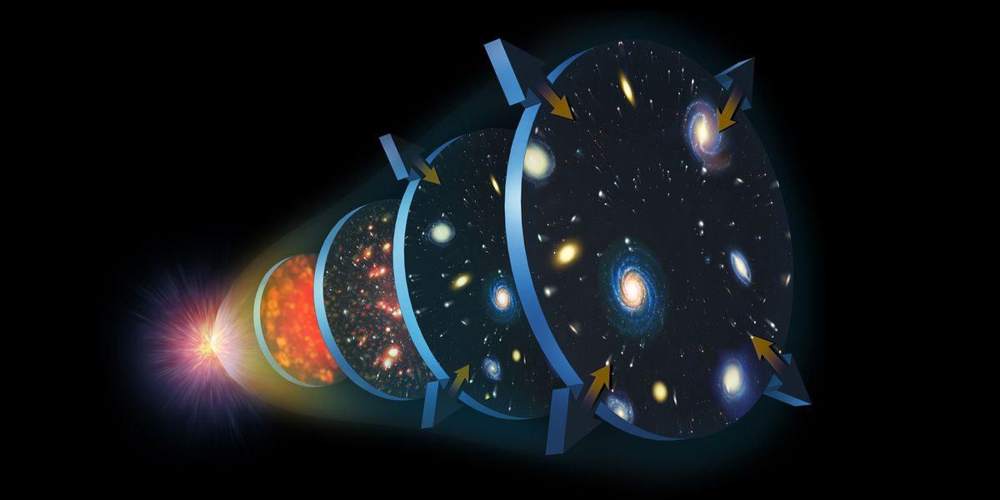

Informações
O começo do tempo:
1996
A pergunta sobre o que existia antes do Big Bang é um dos maiores mistérios e debates na cosmologia e na filosofia. Até onde sabemos, a teoria do Big Bang descreve o início do universo observável, mas não oferece informações sobre o que existia antes desse evento, se é que havia algo.
Existem várias teorias e especulações sobre o assunto, mas é importante enfatizar que atualmente não temos uma resposta definitiva. Algumas das teorias e ideias propostas incluem:
1-Não Havia "Antes": Alguns cosmologistas argumentam que a pergunta "o que existia antes do Big Bang?" pode ser intrinsecamente problemática, porque o Big Bang não apenas marcou o início do espaço e do tempo, mas também o próprio conceito de "antes" pode não ter sentido no contexto do Big Bang.
Hawking argumentou que o conceito de "antes" do Big Bang pode não ser aplicável, uma vez que o próprio tempo e o espaço como os conhecemos podem ter tido origem no Big Bang. Portanto, ele sugeriu que a pergunta sobre o que existia antes do Big Bang poderia não ter sentido no contexto da física atual.
2-Multiverso: Alguns modelos teóricos, como a teoria do multiverso, sugerem que nosso universo é apenas um de muitos universos em um multiverso. Nesse cenário, não faz sentido falar sobre o que existia "antes" do Big Bang em nosso universo, porque o multiverso pode existir em um contexto maior, mas não sabemos como esse contexto maior funcionaria.
3-Universos Cíclicos: Algumas teorias propõem que o universo passa por ciclos de expansão e contração infinitos, com cada Big Bang seguido por um Big Crunch. Nesse caso, pode haver um universo anterior que levou ao nosso, mas novamente, essa ideia é altamente especulativa e carece de evidências sólidas.
4-Teorias Quânticas: A física quântica sugere que o espaço e o tempo podem ser muito diferentes do que imaginamos em escalas muito pequenas, e algumas teorias quânticas especulam sobre a natureza do "pré-Big Bang". No entanto, essas teorias ainda são altamente especulativas.